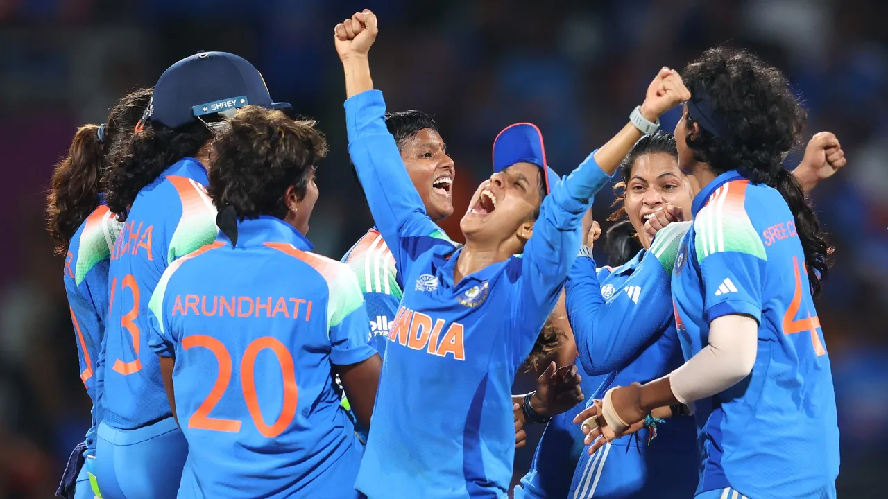

What India’s World Cup win means for women’s cricket
India’s first victory in cricket’s Women’s World Cup will have huge ramifications for the global order of the sport.
Harmanpreet Kaur’s team beat South Africa by 52 runs in yesterday’s final, in front of a deafening 45,000-strong crowd in Navi Mumbai – ending Australia’s decade-long dominance in the sport. With this milestone win, India’s women cricketers have “turned long-cherished dreams into reality” and “etched their names in history”, said The Hindustan Times.
It’s a “a wake-up call” for the rest of the world, and a win that could “spell the end for women’s cricket as we know it”, said Sonia Twigg in The Telegraph. India has become the first country other than Australia or England to win a Women’s World Cup since 2000, and, with greater funding and increased home support, “it is hard to believe” their women cricketers “will stop there”.
‘New levels of stardom’
As Kaur clung on to her match-winning catch, India’s women cricketers entered a “brave new world”, said P.K. Ajith Kumar in The Hindu. Star players like Smriti Mandhana, Deepti Sharma and Shafali Verma have become “household names” overnight, and been propelled to “new levels of stardom across India”.
For Verma, the final’s Player of the Match, the path to yesterday’s success has been marked by significant setbacks. That “rollercoaster ride” began in the conservative northern state of Haryana, where, as a girl, she cut her hair short so she could play in the boys’ team, said Agence France-Presse. Her fearless batting soon led to her international debut at the age of 15, and she became the youngest cricketer to play in a women’s T20 for India.
Belief ‘that women deserved more’
India’s victory on Sunday owes much to star performances by Verma and Sharma but many also attribute the team’s success to major administrative and strategic overhauls behind the scenes.
India’s win was a “vindication” for policy changes that “dared to believe women deserved more”, said Amar Sunil Panicker in India Today. In October 2022, the Board of Control for Cricket in India passed a resolution for pay parity between men and women — a landmark move.
More money is entering the women’s game globally, too. Salary caps are being increased in leagues across Australia and England. Though still behind men’s cricket, the financial gap is narrowing faster than ever before.